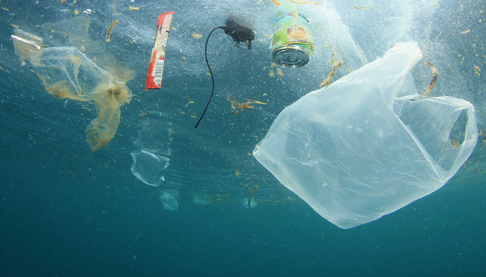
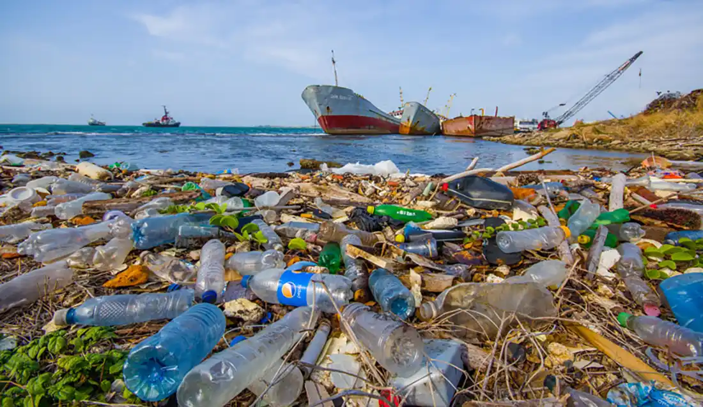

La contaminación del mar en Ecuador es un grave problema que se origina principalmente por la basura (especialmente plásticos), que proceden de las ciudades, los ríos y los esteros y que acaban en el océano. Estos residuos impactan en los animales marinos: porque se los tragan o porque se enredan en ellos. Los ecosistemas únicos de Galápagos también se ven amenazados por este problema. Por otro lado, la contaminación del mar afecta a las comunidades que dependen del mar, lo que hace que sea importante crear conciencia y buscar respuestas que contribuyan a la conservación de los ecosistemas marinos del país.
Objetivo
La basura y los químicos que llegan al mar están dañando gravemente la vida marina y los ecosistemas de los que todos dependemos. Plásticos, redes de pesca abandonadas y microplásticos atrapan animales y se cuelan en su alimentación, mientras vidrio, metales y residuos químicos contaminan el agua y reducen el oxígeno, poniendo en riesgo toda la cadena de la vida. Cada desecho que dejamos en la tierra puede terminar en el océano, afectando no solo a los animales, sino también a las personas que vivimos de él. Entender este impacto y cambiar nuestros hábitos es clave para proteger nuestros mares y garantizar un futuro más saludable para todos.
Problema
La contaminación con basura y químicos amenaza seriamente los ecosistemas marinos de Ecuador. Plásticos, microplásticos y redes de pesca abandonadas dañan a los animales y entran en su alimentación, mientras fertilizantes, pesticidas y derrames químicos alteran el agua, reducen el oxígeno y afectan los arrecifes y manglares. Esto no solo pone en riesgo la vida marina, sino también a las comunidades que dependen del mar para su alimentación, su economía y su cultura.
Marco
La contaminación marina es un problema causado por la basura y los químicos que llegan al océano desde la tierra. Plásticos, microplásticos, fertilizantes y derrames de petróleo dañan a los animales, alteran los ecosistemas y ponen en riesgo a las comunidades que dependen del mar. Cada desecho tiene un impacto real, y cuidar nuestros océanos es cuidar nuestra propia vida.
Impacto
La contaminación con basura y químicos afecta gravemente a la vida marina. Plásticos y redes abandonadas atrapan animales, los microplásticos entran en su alimentación y los químicos contaminan el agua y destruyen hábitats como arrecifes y manglares. Esto provoca la pérdida de especies y amenaza la biodiversidad de los ecosistemas marinos ecuatorianos.


Personas
La contaminación marina también afecta directamente a las personas. Comunidades y civilizaciones que dependen de la pesca y de los recursos marinos ven amenazada su alimentación, su economía y su cultura. Los químicos y la basura que llegan al océano reducen la cantidad de peces y otros alimentos, mientras que los microplásticos y sustancias tóxicas pueden llegar a nuestra cadena alimentaria, poniendo en riesgo la salud de quienes viven del mar.
Soluciones
Proteger nuestros mares empieza con pequeñas acciones que todos podemos tomar. Reducir el uso de plásticos, reciclar correctamente y limpiar playas y ríos ayuda a que los animales marinos no sufran. Evitar verter químicos y fertilizantes al agua protege los ecosistemas y la salud de quienes dependen del mar. Además, aprender y enseñar sobre estos problemas nos permite cuidar nuestros océanos y asegurar que futuras generaciones también puedan disfrutar de ellos.